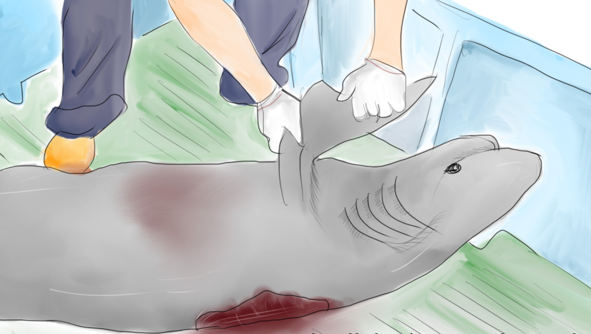

View
The Howling of Sharks
Existing for almost 450 million years, sharks survive through the natural disaster which wiped out dinosaurs. Yet, they cannot escape from man-made disaster - overfishing.
Reported by Erin Chan, Yoyo Chow, Celia Lai, Zinnia Lee
View
消失的犀牛
因為人類活動造成的影響，物種滅絕速度比自然滅絕速度快了1000倍，平均每小時就有壹個物種滅絕。“我們正在經歷的生物滅絕比地球生命史上其它滅絕事件更為惡劣。”
作者：鄧小航 谷霖 朱芳瑤
View
香港首間中醫院備受關注
中醫推廣任重道遠
香港中醫發展 —— 投入資源是否足夠？港人對中醫的需求能否得到滿足？現行的服務是否切合使用者需要？以及相關立法條例如何完善？
作者：邱紫薇 王嘉琛 王婧雯 聶遠格

View
香港器官捐贈制度的現狀與未來
香港器官捐贈制度的現狀與未來 —— 1:13的供應與需求比例下，香港要如何才能解決器官短缺問題？
作者: 于邦寧 丁暢 陳萃屏